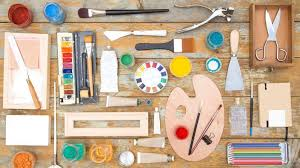

WHAT IS VISUAL ART??
ELEMENTS
EQUIPMENTS
EQUIPMENTS
Art materials are consumable items used by artists to express ideas through artworks; while art tools are non-consumable items used by artists to express ideas through artworks.
Materials used for art can be anything. One person need not to have every kind of art material.
Commonly used materials include-
WaterColors,Paint Brushes,Pencil,Sketchpens,Pens,Charcoal etc.
